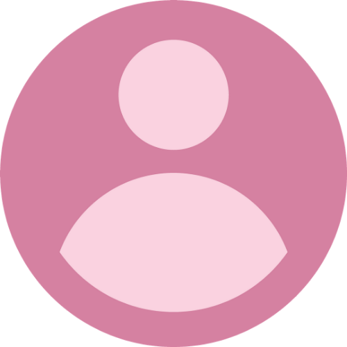

<ion-header [translucent]="true">
  <ion-toolbar>
    <ion-title>
      Escanea tu código
    </ion-title>
  </ion-toolbar>
</ion-header>

<ion-content [fullscreen]="true" class="bg">
  <ion-header collapse="condense">
    <!-- <ion-toolbar>
      <ion-title size="large">Blank</ion-title>
    </ion-toolbar> -->
    <ion-toolbar>
      <ion-buttons slot="start">
        <ion-button color="light">
          <ion-icon slot="start" name="ios-arrow-back"></ion-icon>
          
        </ion-button>
      </ion-buttons>
      <ion-title>&nbsp;</ion-title>
      <ion-buttons slot="end">
        <ion-button>
          <ion-icon slot="icon-only" src="../assets/images/user.png" alt="sin foto"></ion-icon>
        </ion-button>
      </ion-buttons>
    </ion-toolbar>
  </ion-header>
  <div class="card">
    <div class="header">
      <div class="avatar">
        
      </div>
    </div>
  </div>

  <div class="card-body">
    <div class="user-meta ion-text-center">
      <h3 class="playername">Usuario: {{usuario.nombre}} </h3>
      <h6 class="country">Nacionalidad: {{usuario.nacionalidad}}</h6> 
        <p class="ranking">Crédito: <ion-chip outline>
          <ion-label>{{saldo}}</ion-label>
        </ion-chip>
         <!-- <ion-chip color="success" outline>{{saldo}}</ion-chip> -->
        </p>
    </div>
    <!-- <ion-button expand="full" color="primary">http://rogerfederer.com</ion-button> -->
    <!-- <ion-button expand="full" color="secondary">@RogerFederer on Twitter</ion-button> -->
    <!-- <ion-button expand="full" color="secondary">View profile at ATP</ion-button> -->
  </div>

  <ion-fab vertical="bottom" horizontal="center" slot="fixed">

    <ion-fab-button (click)="leerQR()" size="small">
      <ion-icon name="qr-code-outline" size="small"></ion-icon>
    </ion-fab-button>
  </ion-fab>
</ion-content>
<ion-footer color="dark">
  <ion-toolbar >
    <ion-button (click)="borrarCreditos()" size="small" fill="solid"
    color="medium">
    Limpiar créditos
  </ion-button>
  </ion-toolbar>
</ion-footer>
